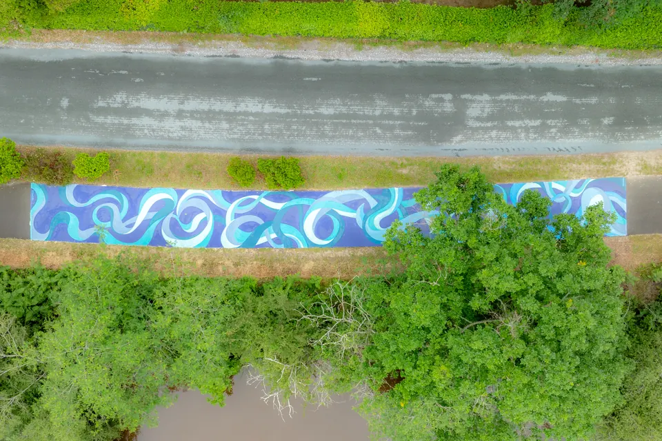
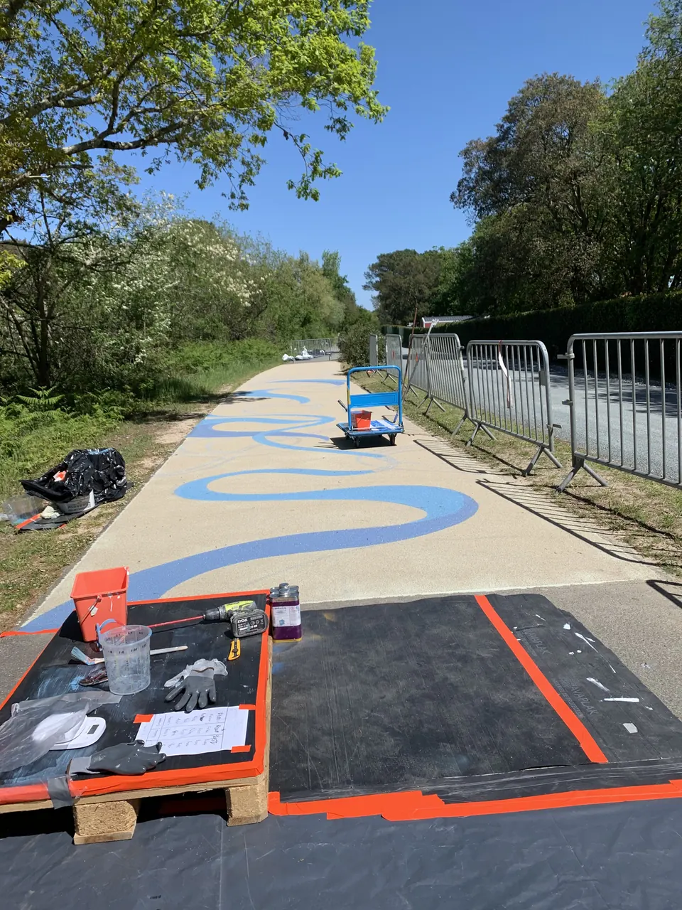
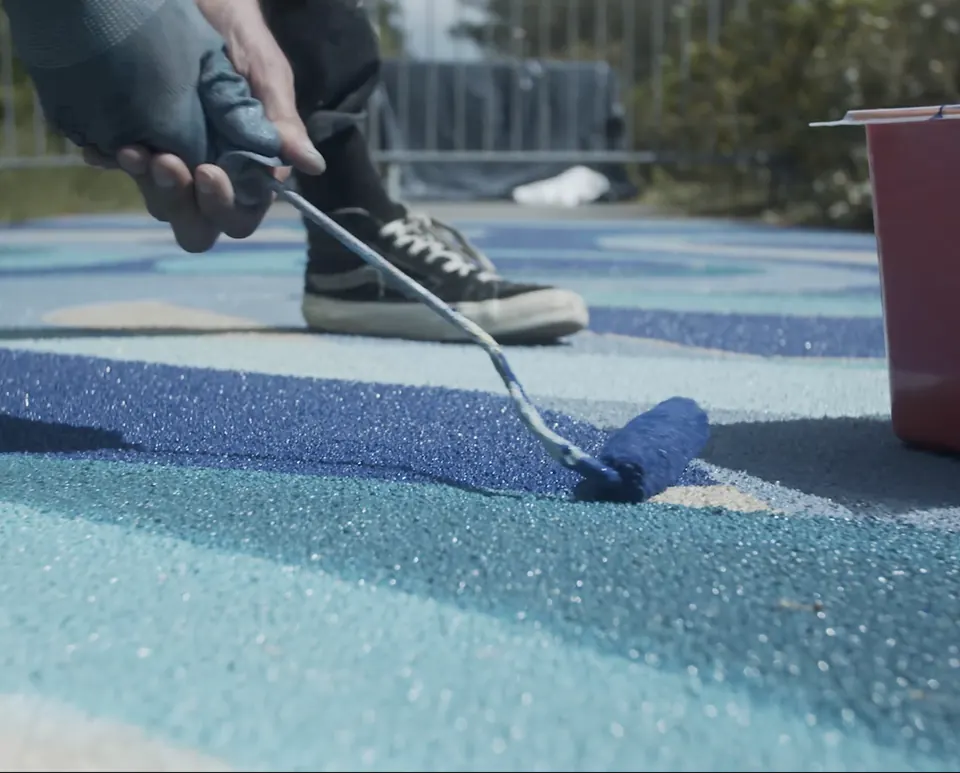

Confluence.

Contexte
Confluence prend place le long d'un parcours de mobilité douce porté par la Communauté de communes MACS, dans le cadre du dispositif « Tu roules sur l'art ». Pensée pour être découverte au fil du déplacement, à vélo ou à pied, l'œuvre s'adresse à un regard en mouvement plutôt qu'à un public statique.
Concept
La fresque questionne la rencontre entre mobilité, paysage et territoire : lignes de force, hachures évoquant le relief, formes cinétiques qui accompagnent le regard du passant. Un art public pensé pour et par le déplacement.
- Lieu
- Labenne, Pays Basque
- Année
- 2024
- Cadre
- « Tu roules sur l'art », Communauté de communes MACS
- Type
- Fresque, art public


Le film.
Le film du parcours « Tu roules sur l'art », sur la voie verte de Labenne.
Le projet sur cc-macs.orgCrédits : Communauté de communes MACS · parcours « Tu roules sur l'art »